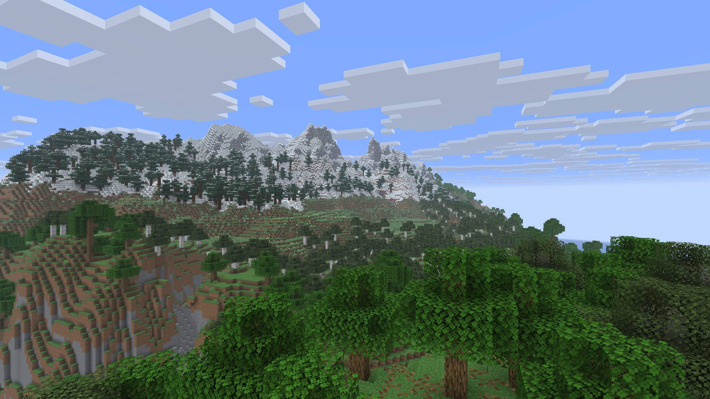
Onde toda aventura começa.
Biomas, criaturas e estruturas para transformar o seu primeiro dia numa história inesquecível.
- 56 biomas
- 20 estruturas
- 61 mobs
 MineGuia
MineGuia
Do primeiro abrigo ao último portal. Guias visuais, diretos e feitos para você jogar melhor.
Cada número aqui saiu dos arquivos do próprio jogo, na Java Edition 26.3, e está explicado do jeito mais simples possível.
56biomas do mundo normal 43encantamentos, nível por nível
43encantamentos, nível por nível 19poções, passo a passo
19poções, passo a passo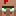
14aldeões e todas as trocasOito guias completos, do primeiro dia aos maiores projetos do jogo.

Explore
Todos os 56 biomas, os animais e monstros de cada um e as 20 estruturas — com tudo o que vem nos baús.
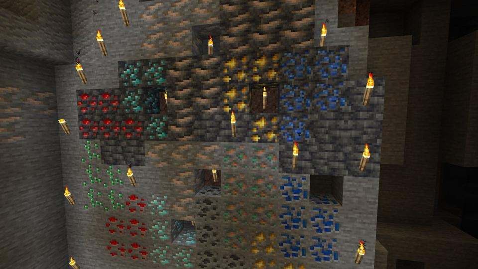

Evolua
Do cobre à netherite, com calculadora de kit e as trocas dos aldeões.
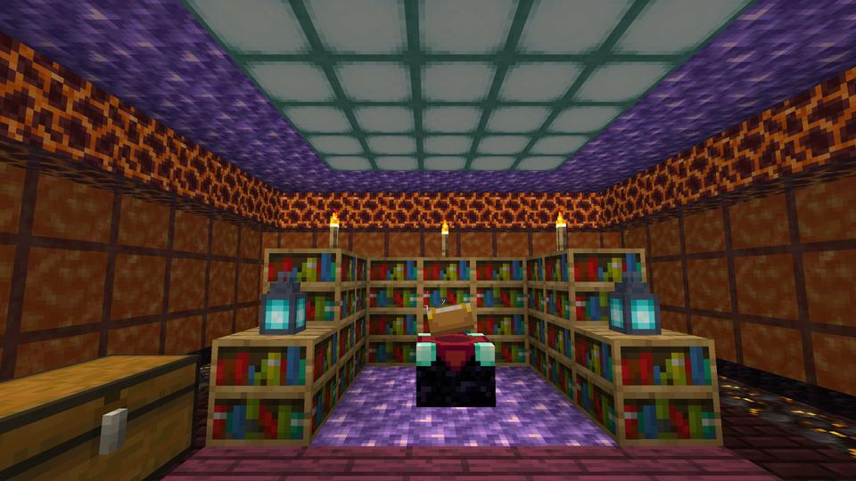
Encante
O melhor para cada item, em um clique.
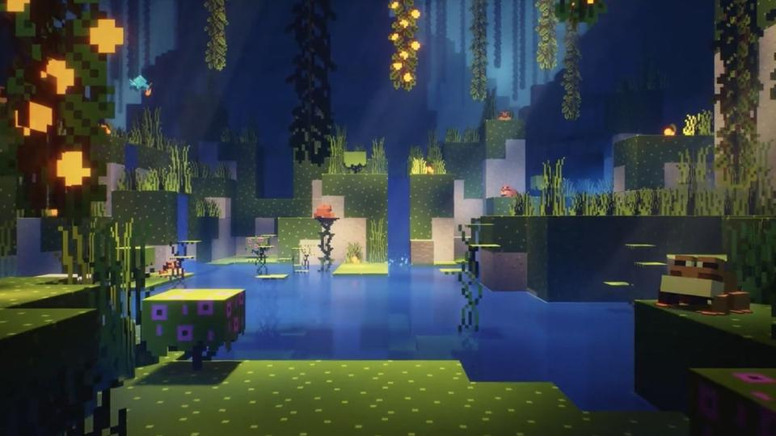
Prepare
Cada poção, do frasco de água à versão mais forte.

Sobreviva
Os 5 biomas, a fortaleza, o bastião e cada mob que vai cruzar o seu caminho.
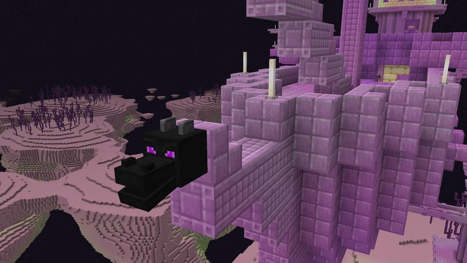

Conquiste
O jeito mais fácil de derrotar o Dragão de Ender — e onde achar os Élitros.
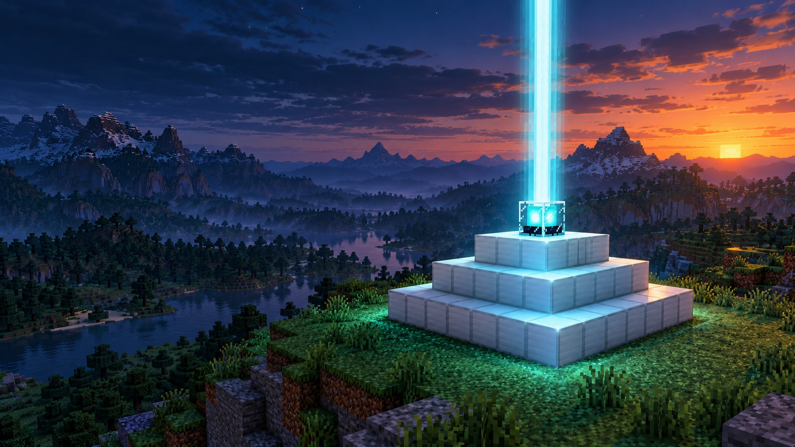

Ilumine
Receita, pirâmides, quantidades, alcance e todos os poderes — com calculadora interativa.
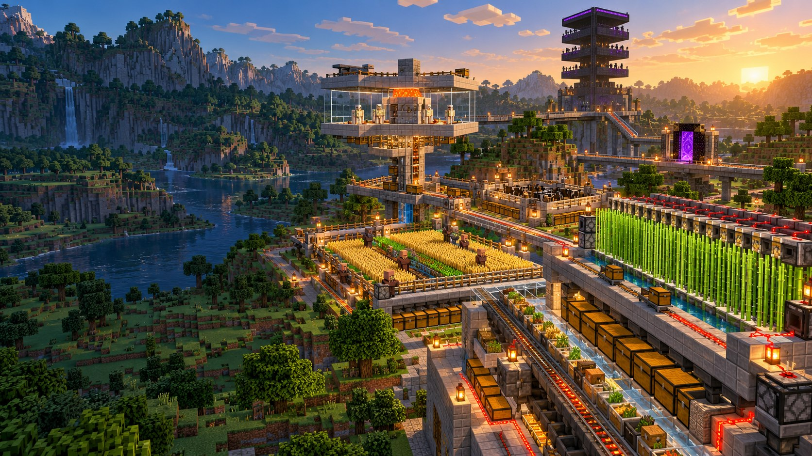

Automatize
23 projetos para Java 26.3, com filtros, requisitos, funcionamento e links para tutoriais da versão atual.

Biomas, criaturas e estruturas para transformar o seu primeiro dia numa história inesquecível.
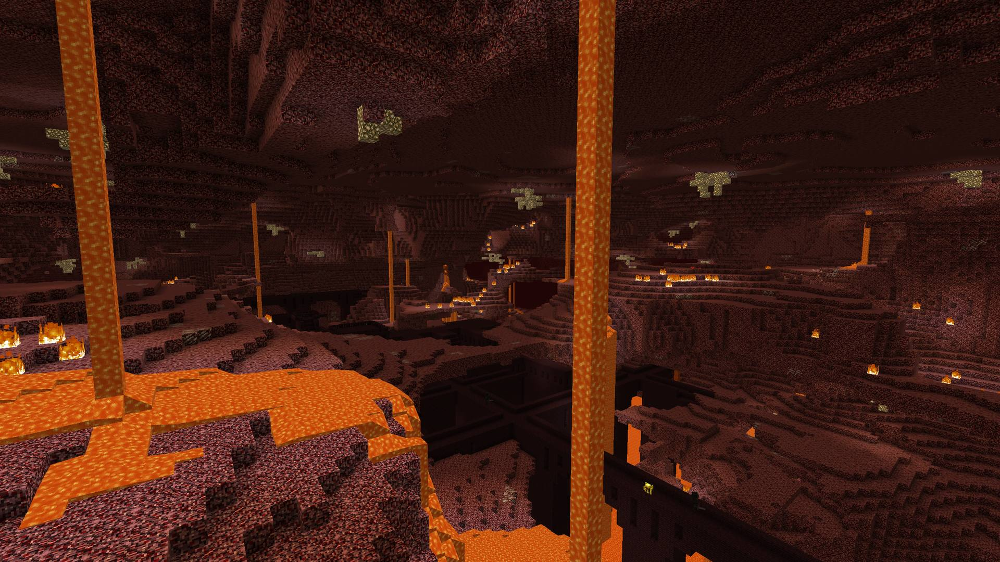
Fortalezas, bastiões e tudo o que você precisa levar para voltar inteiro — e mais forte.
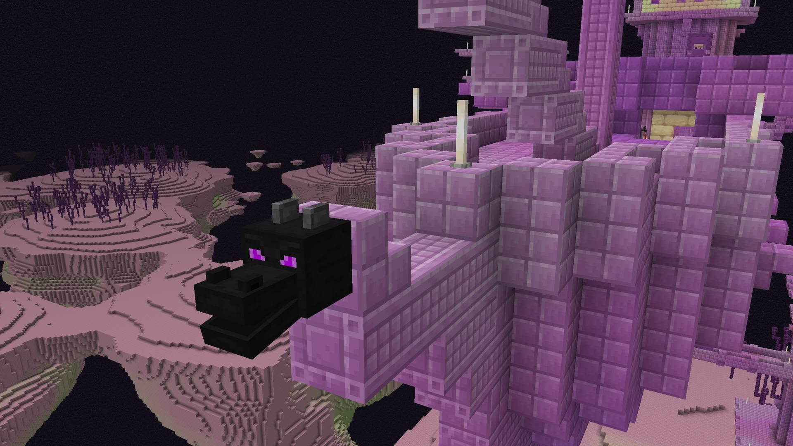
Derrote o dragão, alcance as cidades distantes e conquiste o item que muda toda a exploração.
Cada guia tem uma ferramenta que responde a pergunta na hora.
Calculadora de kit
Melhor encantamento
Passo a passo
Trocas com os aldeões
Um dia inteiro no Minecraft dura 20 minutos na vida real.
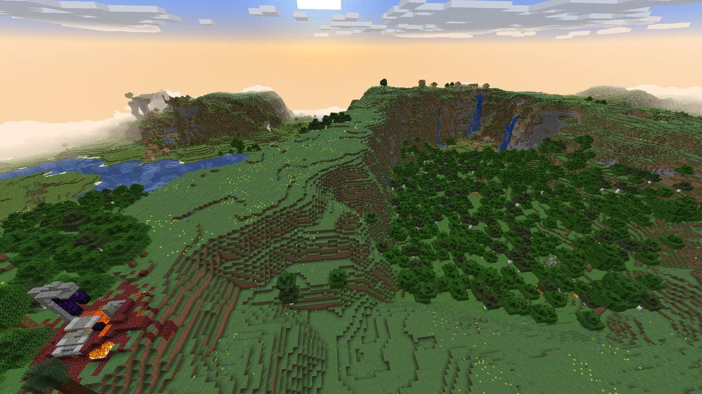